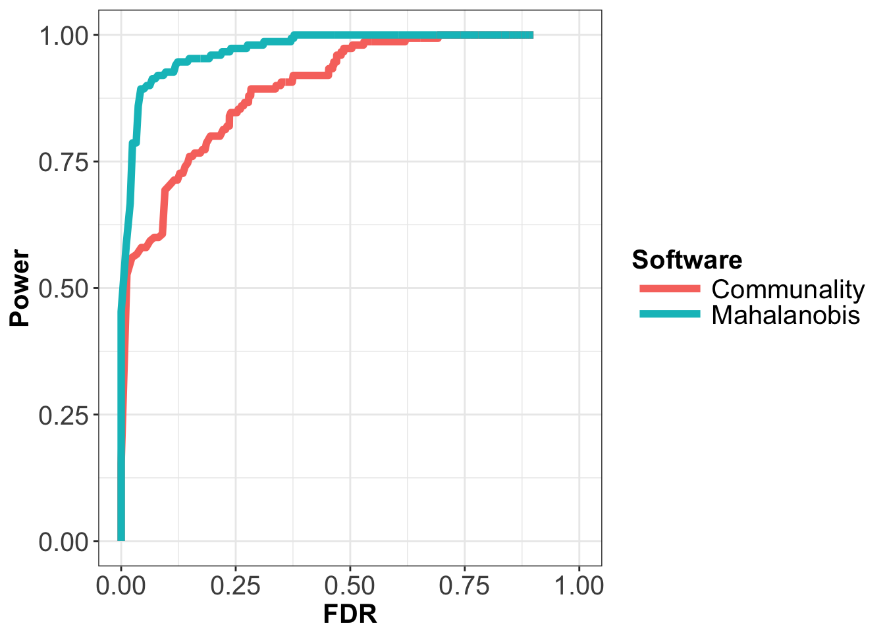

This vignette describes a way to compare different methods, based on the rankings provided by the statistics they return. One way to do this is to draw the power as a function of the false discovery rate, which requires to compute the power and the false discovery rate incrementally for each method. Here is a quick example of how to achieve this type of comparison.
Let’s compare the Mahalanobis distance and the communality statistics by running pcadapt on geno3pops.
library(pcadapt)
file <- read.pcadapt("geno3pops", type = "example")
geno <- as.matrix(read.table(file))
gt <- 1:150
x <- pcadapt(geno, K = 2, method = "mahalanobis")## Number of SNPs: 1500
## Number of individuals: 150y <- pcadapt(geno, K = 2, method = "communality")## Number of SNPs: 1500
## Number of individuals: 150rank.stat.1 <- sort(x$pvalues, decreasing = FALSE, index.return = TRUE)$ix #any set of p-values
rank.stat.2 <- sort(y$pvalues, decreasing = FALSE, index.return = TRUE)$ixThe functions compute.fdr and compute.power defined below respectively compute the values of FDR and power for a list of candidates (list) and a given list of true positives (ground.truth).
compute.fdr = function(list, ground.truth){
if (length(list) == 0){
x <- 0
} else {
x <- sum(!(list %in% ground.truth)) / length(list)
}
return(x)
}
compute.power = function(list, ground.truth){
if (length(ground.truth) == 0){
warning("The list of true positives is empty.")
} else {
x <- sum(list %in% ground.truth) / length(ground.truth)
}
return(x)
}Now if you want to plot the power as a function of the false discovery rate, you need to compute both power and FDR for any list of candidates which length should ideally vary from one to the total number of markers. What you want to do is ranking your markers according to their p-value, then compute both FDR and power for the marker with the lowest p-value, store both values in a data frame, then add the second marker with the lowest p-value, compute both FDR and power, store them in the data frame, and so on. The function below takes on these computations.
create.fdr.pow = function(list, ground.truth, lmax = length(list), smooth = TRUE){
fdr <- 0
pow <- 0
s <- seq(1, lmax, by = 1)
for (k in s){
l <- list[1:k]
fdr <- c(fdr, compute.fdr(l, ground.truth))
pow <- c(pow, compute.power(l, ground.truth))
}
res <- NULL
idx <- sort(fdr, decreasing = FALSE, index.return = TRUE)$ix
fdr <- fdr[idx]
pow <- pow[idx]
if (smooth == FALSE){
res$fdr <- fdr
res$pow <- pow
} else if (smooth == TRUE){
pow.old <- 0
fdr.old <- 0
aux.fdr <- 0
aux.pow <- 0
for (val in 1:length(fdr)){
if (pow[val] >= pow.old){
aux.fdr <- c(aux.fdr, fdr[val])
aux.pow <- c(aux.pow, pow[val])
pow.old <- pow[val]
}
}
res$fdr <- aux.fdr
res$pow <- aux.pow
}
return(res)
}Now all we need is a function to generate a data frame so we can visualize the result with ggplot2.
create.df = function(res, soft.name){
ncol <- length(res$fdr)
df <- array(0, dim = c(ncol, 3))
df[, 1] <- rep(soft.name, ncol)
df[, 2] <- res$fdr
df[, 3] <- res$pow
return(as.data.frame(df))
}
# Generate fdr and power values for each method:
res.1 <- create.fdr.pow(rank.stat.1, gt, smooth = TRUE)
df.1 <- create.df(res.1, "Mahalanobis")
res.2 <- create.fdr.pow(rank.stat.2, gt, smooth = TRUE)
df.2 <- create.df(res.2, "Communality")
df <- rbind(df.1, df.2)
colnames(df) <- c("Software", "FDR", "Power")
df[, 1] <- as.character(df[, 1])
df[, 2] <- as.numeric(as.character(df[, 2]))
df[, 3] <- as.numeric(as.character(df[, 3]))require(ggplot2)
p0 <- ggplot(data = df, aes(x = FDR, y = Power)) +
geom_line(aes(color = Software), size = 2, na.rm = TRUE) +
xlim(0, 1) + ylim(0, 1) +
theme_bw() +
theme(axis.text = element_text(size = 15),
axis.title = element_text(size = 15, face = "bold"),
title = element_text(size = 15, face = "bold"),
legend.text = element_text(size = 15),
legend.key.height = unit(1, "line"),
legend.key.width = unit(3, "line")
)
print(p0)